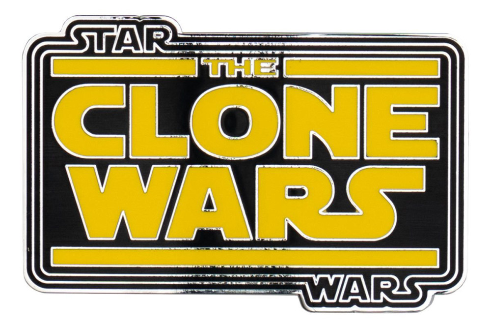

Along with movies, Star Wars has also begun dabbling in the TV show world. Over recent years, some incredible Star Wars TV show projects have been released. My favorites include (in this order):
- Andor
- The Clone Wars
- Rebels
Andor
This show is not only my favorite Star Wars show, but my favorite show of all time. The writing, the acting, the soundtrack, the visuals are all, in my opinion, perfect. This show does incredible things with seemingly little and I am always in awe while watching it.
The Clone Wars
This show is a classic, being one of the first Star Wars shows to release. Running for seven seasons, it tells a lot of incredible stories, many of which are some of the best in Star Wars. The emotional rollercoaster this show will take you on makes it all worth the watch.
Rebels
This show was a four season show that was packed with action and emotion from start to end. The final season of this show was such an emotional punch to the gut that I can never forget it. I absolutely love the characters in this show and their dynamics with each other as well.